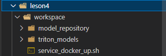

环境配置
1、conda环境
$ /root/share/install_conda_env_internlm_base.sh lmdeploy
$ conda activate lmdeploy
2、安装相关包（主要是lmdeploy）
# 解决 ModuleNotFoundError: No module named 'packaging' 问题
pip install packaging
# 使用 flash_attn 的预编译包解决安装过慢问题
pip install /root/share/wheels/flash_attn-2.4.2+cu118torch2.0cxx11abiTRUE-cp310-cp310-linux_x86_64.whl
pip install 'lmdeploy[all]==v0.1.0'
服务部署
总体结构
我们把从架构上把整个服务流程分成下面几个模块。
- 模型推理/服务。主要提供模型本身的推理，一般来说可以和具体业务解耦，专注模型推理本身性能的优化。可以以模块、API等多种方式提供。
- Client。可以理解为前端，与用户交互的地方。
- API Server。一般作为前端的后端，提供与产品和服务相关的数据和功能支持。
值得说明的是，以上的划分是一个相对完整的模型，但在实际中这并不是绝对的。比如可以把“模型推理”和“API Server”合并，有的甚至是三个流程打包在一起提供服务。
模型转换
使用 TurboMind 推理模型需要先将模型转化为 TurboMind 的格式， （TurboMind 是一款关于 LLM 推理的高效推理引擎）目前支持在线转换和离线转换两种形式。在线转换可以直接加载 Huggingface 模型，离线转换需需要先保存模型再加载。
在线
lmdeploy 支持直接读取 Huggingface 模型权重
- 在 huggingface.co 上面通过 lmdeploy 量化的模型，如 llama2-70b-4bit, internlm-chat-20b-4bit
- huggingface.co 上面其他 LM 模型，如 Qwen/Qwen-7B-Chat
示例如下：
# 需要能访问 Huggingface 的网络环境
lmdeploy chat turbomind internlm/internlm-chat-20b-4bit --model-name internlm-chat-20b
lmdeploy chat turbomind Qwen/Qwen-7B-Chat --model-name qwen-7b
上面两行命令分别展示了如何直接加载 Huggingface 的模型，第一条命令是加载使用 lmdeploy 量化的版本，第二条命令是加载其他 LLM 模型。
lmdeploy chat turbomind /share/temp/model_repos/internlm-chat-7b/ --model-name internlm-chat-7b
以上命令都会启动一个本地对话界面，通过 Bash 可以与 LLM 进行对话。
本地转换
对下载好的模型转换：
# 转换模型（FastTransformer格式） TurboMind
lmdeploy convert internlm-chat-7b /path/to/internlm-chat-7b
lmdeploy convert internlm-chat-7b /root/share/temp/model_repos/internlm-chat-7b/
执行完成后将会在当前目录生成一个 workspace 的文件夹。这里面包含的就是 TurboMind 和 Triton “模型推理”需要到的文件。
推理
TurboMind+本地
# Turbomind + Bash Local Chat
lmdeploy chat turbomind ./workspace
启动后就可以和它进行对话了，如下图所示。
Turbomind+API服务
运用 lmdepoy 进行服务化。
首先，通过下面命令启动服务。
# ApiServer+Turbomind api_server => AsyncEngine => TurboMind
lmdeploy serve api_server ./workspace \
--server_name 0.0.0.0 \
--server_port 23333 \
--instance_num 64 \
--tp 1
上面的参数中 server_name 和 server_port 分别表示服务地址和端口，tp 参数我们之前已经提到过了，表示 Tensor 并行。还剩下一个 instance_num 参数，表示实例数，可以理解成 Batch 的大小。
新开一个窗口，执行下面的命令。
# ChatApiClient+ApiServer（注意是http协议，需要加http）
lmdeploy serve api_client http://localhost:23333
可以对话，也可以端口映射出去，
直接打开 http://{host}:23333。请求
{
"model": "internlm-chat-7b",
"messages": "写一首春天的诗",
"temperature": 0.7,
"top_p": 1,
"n": 1,
"max_tokens": 512,
"stop": false,
"stream": false,
"presence_penalty": 0,
"frequency_penalty": 0,
"user": "string",
"repetition_penalty": 1,
"renew_session": false,
"ignore_eos": false
}
Turbomind+gradio
我们不执行后面的 api_client而是执行 gradio。
API Server 的启动和上一节一样，这里直接启动作为前端的 Gradio。
# Gradio+ApiServer。必须先开启 Server，此时 Gradio 为 Client
lmdeploy serve gradio http://0.0.0.0:23333 \
--server_name 0.0.0.0 \
--server_port 6006 \
--restful_api True
映射：
ssh -CNg -L 6006:127.0.0.1:6006 root@ssh.intern-ai.org.cn -p <你的 ssh 端口号>
作业
提交方式：在各个班级对应的 GitHub Discussion 帖子中进行提交。
基础作业（已完成）：
- 使用 LMDeploy 以本地对话、网页Gradio、API服务中的一种方式部署 InternLM-Chat-7B 模型，生成 300 字的小故事（需截图）
1、模型转换

2、本地chat


3、api服务


4、gradio

进阶作业（暂未完成）
- 将第四节课训练自我认知小助手模型使用 LMDeploy 量化部署到 OpenXLab 平台。
- 对internlm-chat-7b模型进行量化，并同时使用KV Cache量化，使用量化后的模型完成API服务的部署，分别对比模型量化前后（将 bs设置为 1 和 max len 设置为512）和 KV Cache 量化前后（将 bs设置为 8 和 max len 设置为2048）的显存大小。
- 在自己的任务数据集上任取若干条进行Benchmark测试，测试方向包括：
（1）TurboMind推理+Python代码集成
（2）在（1）的基础上采用W4A16量化
（3）在（1）的基础上开启KV Cache量化
（4）在（2）的基础上开启KV Cache量化
（5）使用Huggingface推理